Eng

An interactive handbook for designers learning the basics of web technologies
How seven years of experience at the HSE Art and Design School turned into an open web poster handbook that helps designers learn the basics of web layout
| Timeline | October 2024 – July 2025 |
| My role | UX/UI, Development |
| Project | Diploma |
Context
At the HSE Art and Design School, a web poster is a single-page website that first-year students of the Design and Programming track use to learn HTML, CSS and JavaScript. In essence, it’s the same poster, only moved into the browser, so it can entertain, tell a story or deliver a message while still being a fully working page on the internet.
Over eight years, the format has grown from an experimental exercise into an established teaching practice. Students have already made more than 500 works, and every year over 11 groups from different tracks go through the web poster. I went through it myself at one point, so when choosing a diploma topic, I decided to return to the format and look at it from a different angle.
Web posters are a way for designers to get into code without it feeling like a chore
Zakhar Day
Head of the Design and Programming trackTask
For all the polish of the programme, knowledge about the format is still passed on orally, and in some places it doesn’t exist at all. Web posters rely on tutors, their reviews, consultations and advice in the group chat. Tellingly, when I asked teachers ‘what is a web poster?’, they answered after a long pause, and some never found an answer.
So the goal was to move this oral knowledge into a resource that works even without a teacher nearby. At the same time, I didn’t want it to become yet another front-end course, since the internet has plenty of those already. Otherwise the things the format was invented for would get lost, namely freedom, play, the right to make mistakes and the author’s own idea.
Research
Before writing the handbook, I had to understand what kind of format this is and define its boundaries. To do that, I talked to four teachers connected to the web poster in one way or another and surveyed 25 students about their questions and difficulties. In parallel, I went through the works from 2019–2025 by hand and gathered all the findings in a 148-page research book.
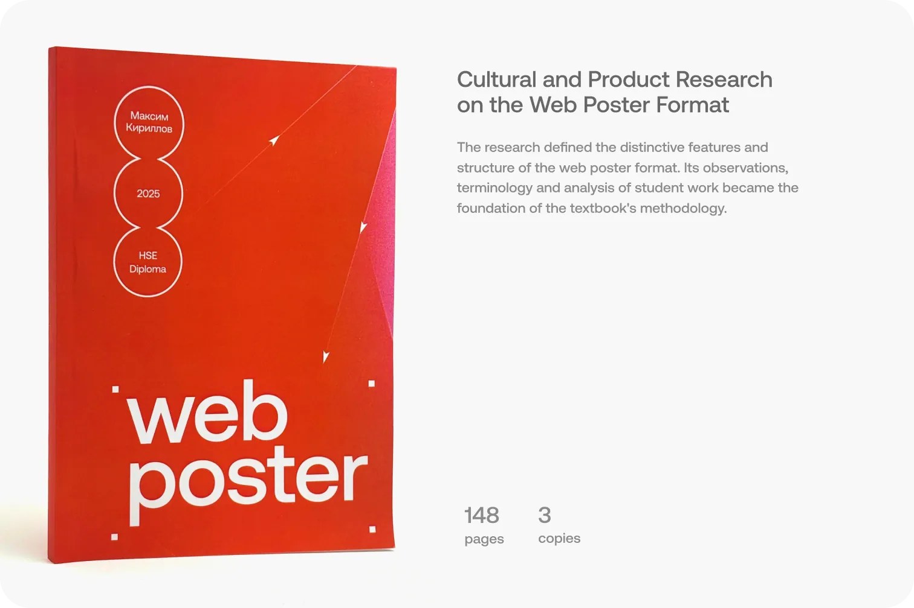
Idea
Look closely, and you’ll see that every poster is built from recurring techniques, which means the archive of student work is already teaching material in itself. All that was left was to take the posters apart, show what they’re made of and give the code for each piece.
That’s how the handbook came about. It talks about the philosophy and features of the format, and the code shows up right when a student gets stuck trying to bring their own idea to life.
Problems
Look closely, and you’ll see that every poster is built from recurring techniques, which means the archive of student work is already teaching material in itself. All that was left was to take the posters apart, show what they’re made of and give the code for each piece.
- Knowledge about the format is only available when a teacher is around, so students can hardly get ahead or figure something out on their own
- Time goes into reinventing techniques that hundreds of people have already done before you, which leaves noticeably less of it for experimenting
- Strong works from previous years gradually get lost, since people usually look only at posters from the last couple of years
Solution
In response to these problems, I built a static website with three sections. Handbook articles bring together the theory of the format and make it available at any moment, the module library stores ready-made techniques with code, and the catalogue brings works from 2019–2025 back into view. The sections are linked to each other, so from any poster it’s easy to jump to the techniques it’s built from.
Target audience
Primarily, the website is made for students of the Design School and solves their local tasks. At the same time, it’s designed so that anyone who comes across it can find their way around and get to know the basics of web technologies through an experimental format.
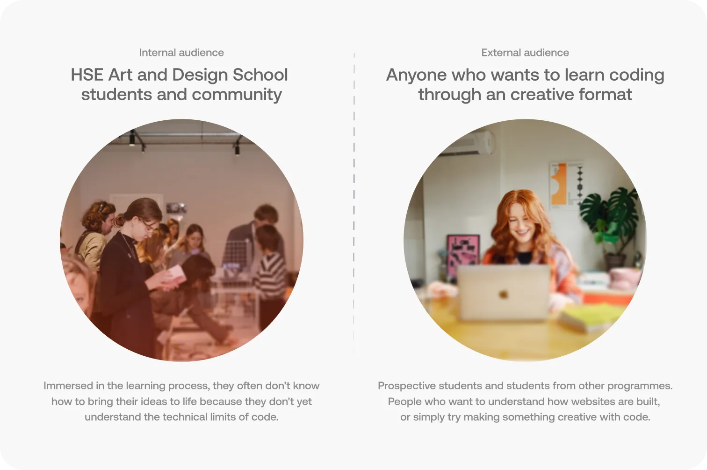
‘Not a coding handbook’
The project sits among educational resources but doesn’t compete with them directly. It’s free, non-commercial and solves a fairly narrow task, which is gathering and passing on the experience of one particular format.
Layout courses teach the technology itself, while this website shows how to use it to come up with and build your own poster.
How do people find out about the project?
Promotion relies on word of mouth within the school. At the start of the year, a teacher tells first-year students about the website, students pass it on to each other, prospective students learn about it at the exhibition of printed web posters, and from there it gradually reaches outside users.
This model costs nothing, needs no separate upkeep and relies on people who already know the format.
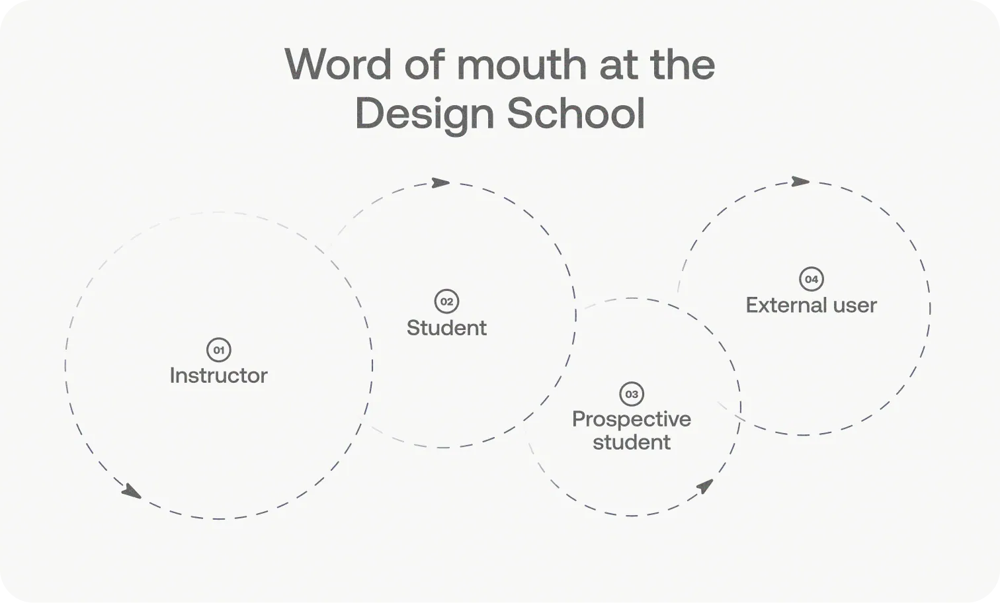
Digital product
The website consists of three interlinked sections that follow a student’s path while working on a poster. Usually it all starts with looking for references in the catalogue, then the student figures out a technique they liked through the module library, and when they want to understand the format more deeply, they open the handbook. That’s why the story of the product follows the same order.
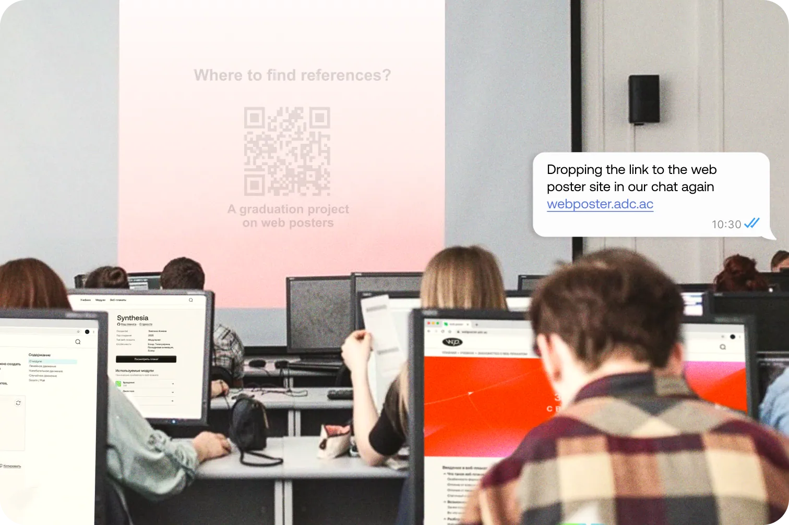
Catalogue
The catalogue brings together student works from 2019–2026 and most often becomes the first entry point to the website. As a rule, a teacher asks students to collect references before class, and they open the website via a link from the chat or a QR code on the screen.
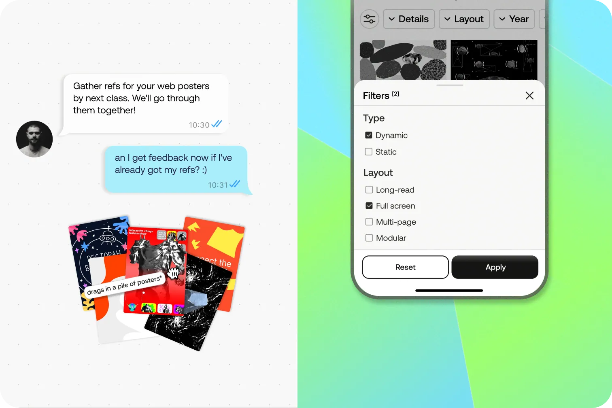
To avoid scrolling through hundreds of posters in a row, works can be filtered by type, layout, year and technical details.
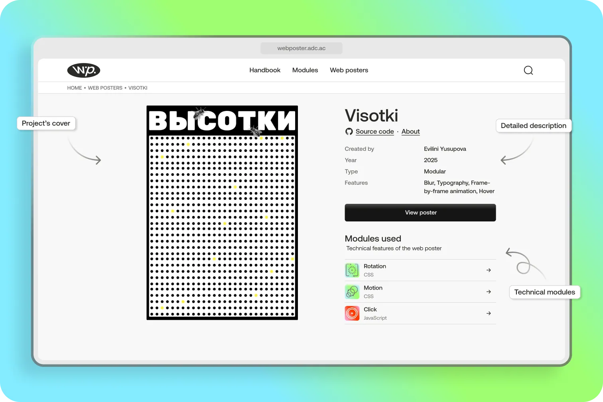
Each work has its own page with a cover, author, year, a description of its features and a link to the source code. Below are the modules the poster is built on, and this is essentially where the move from inspiration to practice begins. If an animation or an unusual click response catches your eye, you can open the relevant module right away and see how it works.
Modules
The module library stores the recurring techniques that web posters are built from. Modules are divided into static and dynamic ones, and each contains several solutions around movement, rotation, transformations or working with text. Every solution comes with a short explanation, an interactive example and code you can copy in one click.
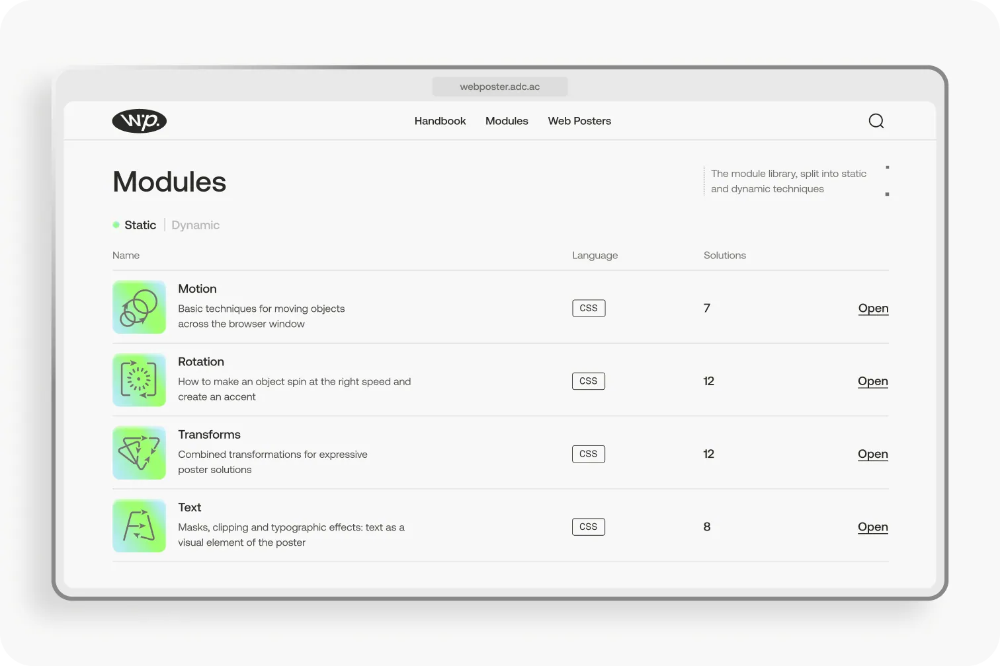
The interactive example lets students play with a technique first and only then dig into the code. After that, they move the snippet into their editor and adapt it to their own poster.
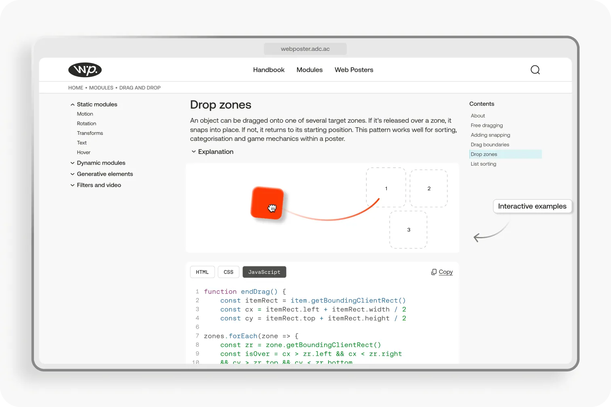

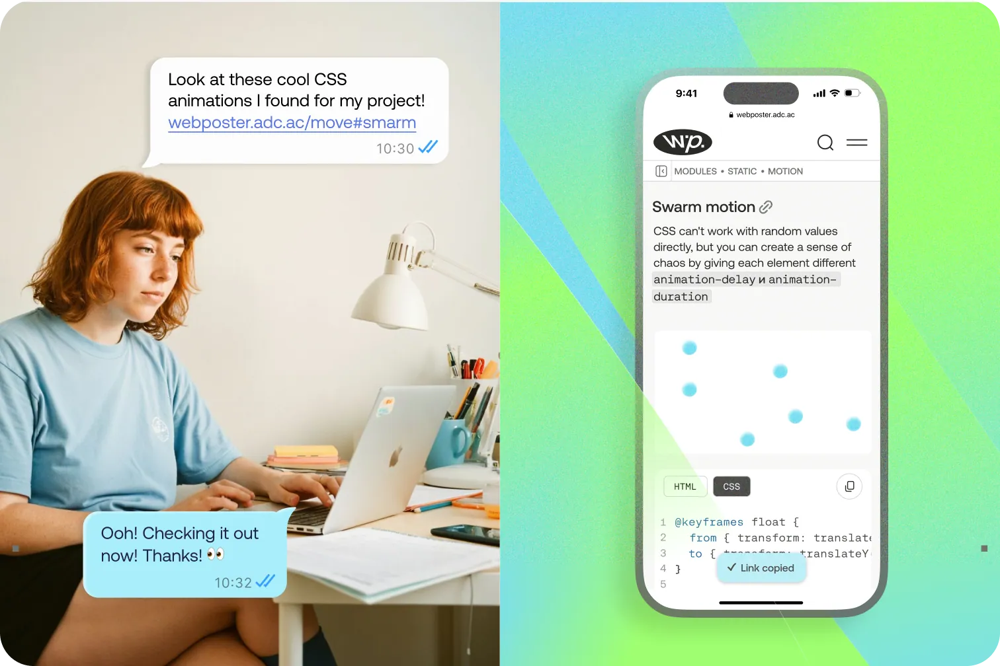
And if a find turns out well, it’s easy to share a link to a specific solution with a classmate, so word of mouth keeps working between students too.
Handbook
The handbook covers the theory of the format and is structured as a sequential path in two parts. The first explains what a web poster is and why you’d make one, while the second describes the whole working process, from the idea and mockup through to animation, interactivity and publishing. Each article shows its reading time, and the side navigation helps you not get lost among the chapters.
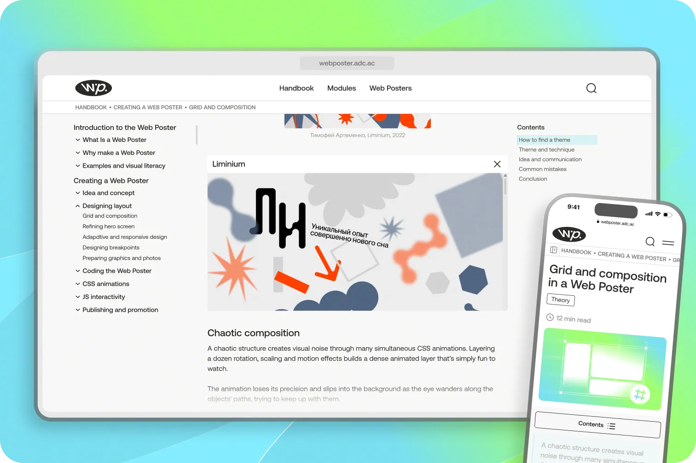
That said, theory in the handbook always relies on live examples. Previews of student posters are embedded in the articles and open right on the page, so you can see the described technique in action straight away.
This way the handbook closes the loop with the catalogue and modules, and students gradually build a complete picture of the format, coming back to the website of their own accord.

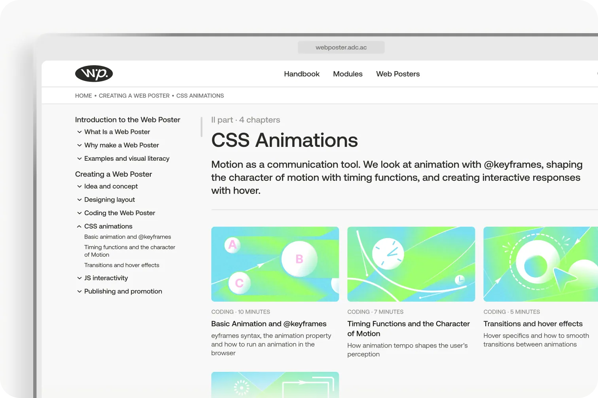
There’s a lot of material in the handbook, so the navigation mirrors its nested structure. Articles are grouped into chapters, chapters into two parts, and the side menu expands to the level you need, always showing where the reader is at the moment.
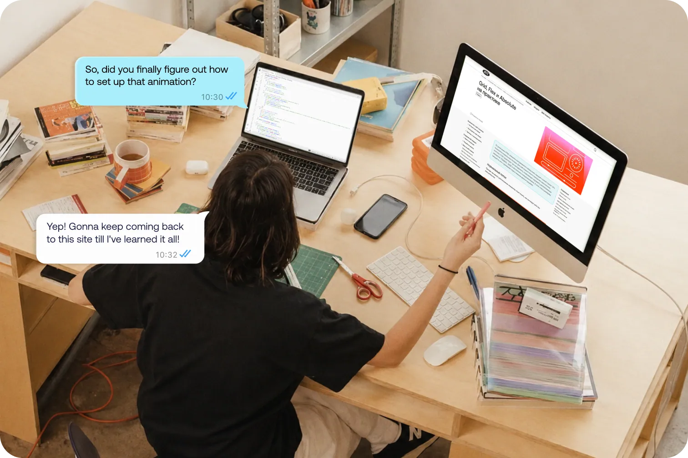
Students can come back to the handbook whenever they want to dig deeper into the format or get ahead of the programme.
Results
The website launched without a separate ad campaign or social media promotion, so the first numbers came almost entirely from word of mouth within the school.
According to Yandex Metrica, 458 people visited the website over two months, viewing its pages 4,800 times. The average time on site was over five minutes, which suggests that people really do read the articles and explore the modules.
5 min 21 sec
Average time on site
4.8K
Page views
458
Unique visitors
Cover series
Alongside the handbook texts, I made a series of more than 40 article covers. They all belong to the project’s shared graphic system with gradients and soft shapes, and each illustration shows the article’s topic in a simple way, be it animation, responsive design or grids. Thanks to this, the handbook is easier to browse, and the website itself feels like a coherent piece of authored work.

You’ve made a genuinely meaningful project for our community and for design education as a whole
Anna Komkova
Instructor at HSE Art and Design SchoolLive talk
On top of that, the project stepped outside the school for the first time. At the Svetlovka Library, I gave a talk about web posters and how the website works, and the format reached an audience that hadn’t come across it before. For the project, this was the first step towards outside users, whom word of mouth reaches last according to the marketing model.